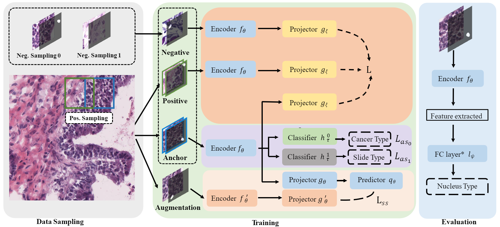
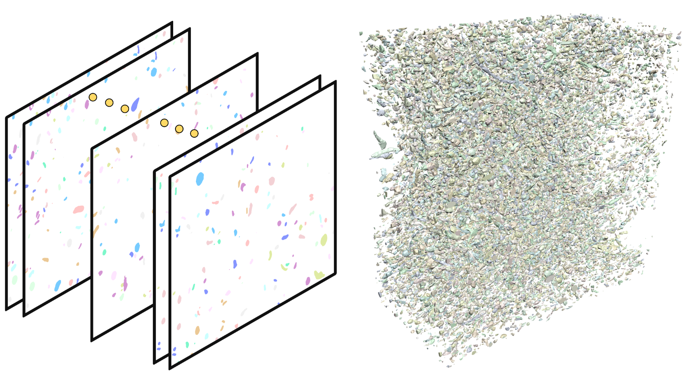
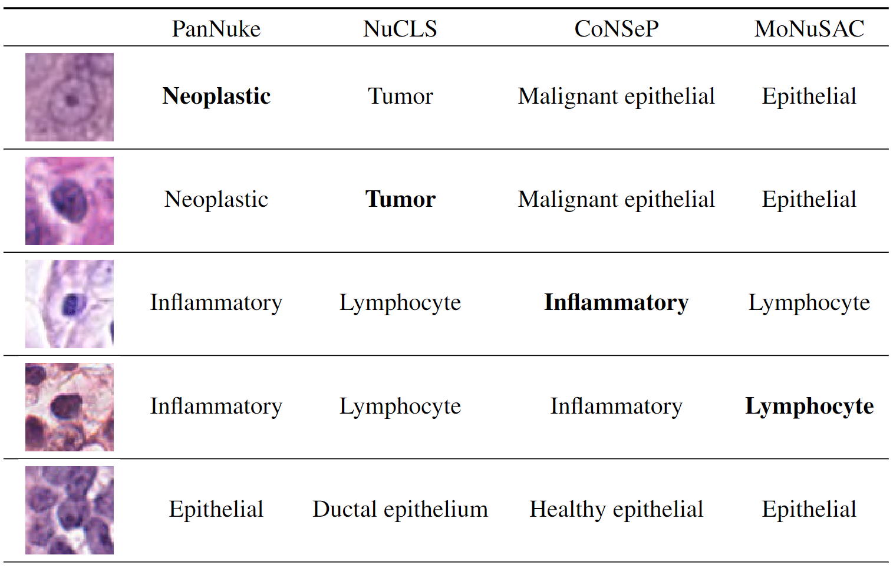

|
Wenhua Zhang (张闻华)
Lecturer
Institute of Artificial Intelligence |
| Sep. 2023 | I joined the School of Future Techonology at Shanghai University! |
| Aug. 2023 | I will serve as a Program Committee of AJCAI 2023. |
| July. 2023 | I graduated from the Department of Computer Science of the University of Hong Kong! |
| Mar. 2023 | I will serve as a Reviewer of MICCAI 2023. |
I am now a lecturer in the School of Future Technology, Shanghai University. My research interest focuses on Medical Image Analysis, Digital Pathology, Image Classification, Computational Geometry.
Before joining Shanghai University, I got my Ph.D. degree from the Computer Science Department of the University of Hong Kong, supervised by Prof. Wenping Wang and Prof. Pan Jia , and my Bachelor degree from the Department of Computer Science and Technology, Shandong University.
|
|
|
|

|
Wenhua Zhang*, Jun Zhang*, Sen Yang, Xiyue Wang, Wei Yang, Junzhou Huang, Wenping Wang#, Xiao Han#. [Project page] [Paper] [Code,Data] |
|
|
|
|

|
Wenhua Zhang, Yating Yue, Hao Pan, Zhonggui Chen, Wang Chuan, Hanspeter Pfister, Wenping Wang#. [Project Page ] [Paper] [Code,Data] |
|
|
|
|

|
Wenhua Zhang*, Jun Zhang*, Sen Yang, Xiyue Wang, Wei Yang, Junzhou Huang, Wenping Wang#, Xiao Han#. [Project Page ] [Paper] [Code, Data] |
|
|
| CoNIC 2022 |
| 1) Segmentation and Classification: 3/96 |
| 2) Cellular Composition: 1/96 |
| AJCAI | 2023 |
| ACM SIGGRAPH | 2023 |
| MICCAI | 2023 |
| Dec. 2022 - June. 2023 | Visiting Student, ShanghaiTech University | Prof. Dinggang Shen, IDEA Lab |
| Nov. 2020 - Nov. 2022 | Research Intern, Tencent | Dr. Jun Zhang |
| Aug. 2017 - Aug 2017 | Research Assistant, The University of Hong Kong | Prof. Wenping Wang |